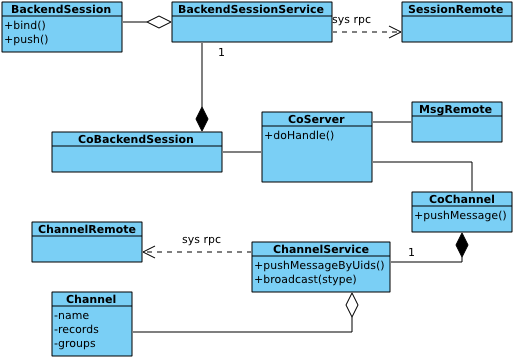
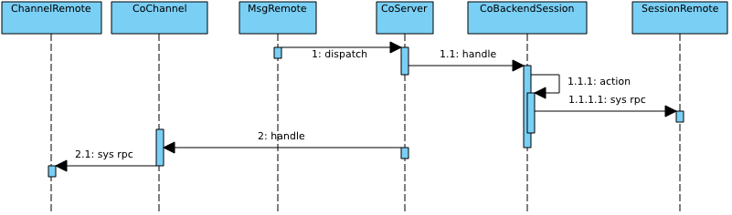

后端服务器
Pages 200
- Home
- Adding a component
- Adding a filter
- Adding an admin module
- adminConsole 开发文档
- adminConsole安装与简介
- Application configuration
- Architecture overview of pomelo
- Architecture overview of pomelo 포멜로 아키텍처 개요
- Backend server
- Builtin components
- Chat源码下载与安装
- Client development
- Client platform supported
- Code architecture
- Command Line Document
- Communication protocol
- Communication with client
- Connector实现
- Debugging Pomelo ServerApps With WebStorm IDE
- Development introduction to lordofpomelo
- Distributed Chat
- Distributed Chat 분산 채팅
- Distributed deployment of pomelo
- Documentation
- FAQ
- FAQ 자주 묻는 질문들
- Features List
- Framework class diagram
- Framework execution flow
- Getting source code & installation
- Helloworld of pomelo
- Home in Chinese
- Home in Korean
- Installation
- Installation guide of lordofpomelo
- Installation 설치
- Introduction of pomelo
- Introduction to Lord of Pomelo
- Introduction to Pomelo
- Introduction to Pomelo 포멜로 서론
- Introduction to servers in lordofpomelo
- Kor
- Library reference of pomleo
- Log management
- Lord of pomelo安装指南
- lordofpomelo 0.3新特性
- LordOfPomelo code organization
- Lordofpomelo install amazon ec2
- LordOfPomelo installation guide
- LordOfPomelo introduction
- LordOfPomelo server introduction
- LordOfPomelo startup process
- LordOfPomelo 介绍
- LordOfPomelo 代码组织
- LordOfPomelo 启动流程
- LordOfPomelo 安装指南
- LordOfPomelo 服务器介绍
- lordofpomelo 简介
- Message compression
- plugin
- plugin文档
- Pomelo 0.2到0.3升级指南
- Pomelo 0.3 new features
- Pomelo 0.3新特性
- Pomelo 0.4 new features
- Pomelo 0.4新特性
- Pomelo 0.5新特性
- pomelo 0.6版新特性
- pomelo 0.7版新特性
- pomelo 0.8新特性
- pomelo 0.9新特性
- pomelo 1.0新特性
- Pomelo admin web tool usage
- pomelo admin web工具的使用
- pomelo cli exec命令使用
- Pomelo cli usage
- Pomelo cli使用
- Pomelo command line tool
- pomelo command line Usage
- Pomelo communications protocol
- Pomelo daemon usage
- Pomelo daemon的使用
- Pomelo data compression protocol
- Pomelo design motivation
- Pomelo document contribution in Chinese
- Pomelo document contribution in English
- Pomelo Framework
- Pomelo framework overview
- Pomelo Framework Reference
- Pomelo performance
- Pomelo robot usage
- pomelo robot使用文档
- pomelo rpc zeromq性能测试报告
- pomelo rpc性能测试报告
- Pomelo startup procedure
- Pomelo startup procedure 포멜로 시작 절차
- Pomelo startup 절차
- Pomelo sync usage
- pomelo sync使用文档
- Pomelo tools libraries introduction
- Pomelo update tutorial from 0.2 to 0.3
- Pomelo 协议
- Pomelo 性能测试
- Pomelo 数据压缩协议
- Pomelo 组件
- Pomelo 通讯协议
- Pomelo 소개
- Pomelo's new features in version 0.5
- Pomelo's new features in version 0.6
- Pomelo's new features in version 0.7
- Pomelo's new features in version 0.8
- Pomelo's new features in version 0.9
- PomeloRobot 使用文档
- PomeloSync 使用文档
- pomelo中文tutorial
- pomelo介绍
- Pomelo使用参考手册
- Pomelo启动流程
- Pomelo命令行工具使用
- Pomelo客户端开发
- Pomelo工具和库介绍
- pomelo快速使用指南
- Pomelo性能分析
- pomelo性能参考
- Pomelo成功案例
- Pomelo日志管理
- pomelo架构概览
- Pomelo框架概述
- pomelo的HelloWorld
- Pomelo的master服务器高可用
- Pomelo的分布式部署方法
- Pomelo的设计动机
- Pomelo의 HelloWorld
- Pomelo의 설계 동기
- Preface
- Protobuf compression
- Protobuf压缩
- Quick start guide
- Quick start guide 퀵 스타트 가이드
- Reference configuration of app.js
- Route compression
- Rpc framework
- Rpc invocation
- Rpc调用原理
- Runtime Configurations
- Server Administration framework
- Server scalability
- Start process for lordofpomelo
- Style and conventions
- Terminologies
- Test
- Tools reference of pomelo
- Treasure
- Treasures introduction
- Treasures 介绍
- Treasures 트레져
- Tutorial
- Tutorial 2 Treasures
- Tutorial summary
- Tutorial 튜토리얼
- tutorial1
- tutorial1 分布式聊天
- tutorial1–分布式聊天
- Understanding connector
- Welcome to pomelo
- Welcome to Pomelo 웰컴 투 Pomelo
- 与客户端通信
- 中文FAQ
- 中文文档首页
- 使用 WebStorm IDE 调试 Pomelo 应用程序
- 前言
- 协议格式
- 后端服务器
- 命令行文档
- 增加admin module
- 增加filter
- 增加rpc调用
- 如何添加新的服务器类型
- 安装pomelo
- 客户端支持介绍
- 工具参考
- 库参考
- 应用程序配置
- 快速使用指南
- 总结
- 扩充服务器
- 服务器管理框架
- 术语解释
- 框架类关系图
- 框架驱动
- 欢迎使用pomelo
- 消息压缩
- 游戏服务器的app.js配置参考
- 组件概述
- 给pomelo加个组件
- 试试route压缩
- 风格与约定
- 설치
- 웰컴투pomelo
- Show 185 more pages…
Clone this wiki locally
在这部分，我们继续讨论与用户请求相关的内容。后端服务器中是用来处理用户请求的具体逻辑的地方，当前端服务器接收到来自客户端的请求时，通过分析请求的路由，并做简单的校验表明路由是合法的，那么前端服务器就会根据路由策略配置，选择某一后端服务器，发起rpc调用。后端服务器的所有调用请求均来自前端服务器的rpc调用。
当后端服务器发起filter-handler链对前端服务器分派过来的请求进行处理时，如果仅仅需要给用户端响应，那么仅仅通过rpc的回调返回具体的响应即可。但是，很多情况下，具体的请求处理逻辑需要给其他用户推送消息。比如，在一个聊天应用中，当有一个用户发起聊天请求时，其聊天的所有内容都需要推送给同一房间的其他用户。当然，消息推送逻辑并不仅仅在后端服务器中使用，前端服务器也可能会有类似的场景。
CoBackendSession组件和CoChannel组件一般是用在后端服务器中的，它们一起来完成给特定的用户推送消息。我们知道，BackendSession可以看作前端原始session在后端服务器的一个代理，CoBackendSession包装的BackendSessionService就是用来创建并管理后端的BackendSession，并可以通过相应的bind以及push调用，可以给前端原始的session绑定uid，以及设置一些属性。
CoChannel包装的ChannelService中维护了Channel的信息，每一个Channel可以看作是一系列绑定用户的uid集合，通过Channel的相应调用即可向客户端推送消息。以下是对后端服务器来说，相应的类关系图:

后端服务器的所有请求都是从前端服务器的rpc请求中获得的，也就是说后端服务器的CoServer组件的请求是MsgRemote派发的。
当前端服务器发出rpc请求时，会携带用来创建BackendSession的信息。在后端服务器中，会创建对应的session信息，这个session就是backendSession，对backendSession所做的任何更改不会影响原始的前端服务器中的session。当遇到用户的登录请求时，可能需要给原始的session绑定uid，并且设定一些自定义属性。以聊天为例，后端服务器处理登录请求时，就需要给session绑定uid，并且给其设置属性room_id等。这些可以通过使用BackendSession的bind以及push操作。在后端服务器求处理链上的所有session参数，其类型均是BackendSession，对其的直接修改不会直接反映到原始的前端服务器的session上。
有时候，需要对用户进行分组，以便更好地推送消息。还以聊天为例，一个聊天室的成员应分为一组，当有人说话时，直接将消息推送到这一组即可。pomelo中的Channel就是应用这种场景的，每一个Channel中维护一个uid列表，当调用Channel的pushMessge方法时，会给所有的在这个Channel中的用户推送消息。
ChannelService还提供了pushMessageByUids方法，使得推送消息的时候，不用通过Channel，直接传入一个用户列表即可，这样使得消息推送更加灵活。同时，ChannelService还提供了broadcast方法，可以针对某一类型的前端服务器，给其所维护的所有已经绑定uid的session广播消息。
以上的对BackendSession以及Channel操作，无论是给session绑定id，还是通过Channel发送消息,还是通过ChannelService进行广播，实际上都涉及到与客户端的通信，由于后端服务器是无法与客户端进行通信的，这些操作实际上都是对前端服务器的rpc调用。因为在前端服务器发起rpc调用给后端服务器派发请求的时候，已经携带了前端服务器id等信息，在BackendSession中会维护此session所在的前端服务器的id，因此，此时后端服务器向前端服务器发起rpc调用时，不再需要路由计算，直接使用相应的frontendId即可。
以下是一些典型用例行为的时序图：

上面的图中展示了后端服务器中的调用流程，从MsgRemote获得请求，然后分派给CoServer，Server会发起Filter-Handler链对用户请求进行处理，在Filter-Handler链中的session参数，均为BackendSession。当调用了session的bind，push，kick等操作时，CoBackendSession会向对应的前端服务器发起rpc调用，这个rpc调用由SessionRemote提供服务，完成对应session的bind，push，unbind,kick等操作。
如果在Handler-Filter链中处理时需要给用户推送或者广播消息，就可以使用Channel了。可以通过Channel的pushMessage给一个Channel推送消息，也可以使用ChannelService的pushMessageByUids。这些操作实际上也是对前端服务器的rpc调用,为这些操作提供rpc服务的是ChannelRemote。
注意事项
BackendSession是前端服务器中的session在后端服务器中的代理，当后端服务器需要给前端的原始session绑定uid或者设置自定义属性时，需要使用调用bind和push，解绑uid绑定使用unbind。如果仅仅调用了BackendSession的set/get，而没有调用push的话，那么对BackendSession的属性的修改，只在后端服务器的处理链中后面部分有效，而不对其他任何地方的Session产生影响。比如，内建的Filter timeout，在before filter中，开启一个定时器，并把定时器id作为一个属性set到BackendSession中，这个定时器id属性将会在处理请求链的后面部分可以被访问，因此，在after filter中，就通过取得定时器id进行了定时器的清理工作。这种对BackendSession修改仅仅在后端服务器里有效，不会对前端的原始session造成任何影响。
对于前端服务器维护的Session信息，可以认为，一个客户端连接就对应一个Session，Session可以看作与客户端连接一一对应。当用户登录的时候，会使用uid绑定对应的session，也可以理解为这个用户通过哪个session进行了登录。在sessionService里有选项singleSession，如果设置为true的话，那就表示一个uid只允许一个session登录，当有新的session建立登录的时候，以前的登录会被踢掉。否则，是允许一个uid绑定多个session的，也就是说一个uid允许维持多个连接。这在实际中是很有意义的，比如，用户的客户端可能有多个设备，那么这样的话，多个设备就可以同时在线。
关于Channel，Channel中维护着一组uid，每一个uid会对应多个session，每个session由sessionid以及serverid来指定其前端的连接信息，一个uid可以加入多个Channel中。Channel是后端服务器本地的，也就是说两个后端服务器A和B不会共享Channel信息，当出现跨服务器访问Channel的时候，会出现Channel找不到的错误。当确实需要进行共享Channel信息时，可以考虑使用pomelo提供的global-channel插件，那里使用了redis来维护Channel信息，而不再把Channel信息放在服务器本地，后端服务器通过redis即可查询Channel中的uid信息，然后就可以发起调用了。
总结
对客户端请求的处理是pomelo较为复杂的部分，它由pomelo的多个组件共同完成，前端服务器上的CoConnector会加载connector并开启请求监听，当有客户端连接的时候，其对应的连接事件会触发，从而会新的连接创建并维护session，这些操作由CoSession完成。当用户请求具体的服务的时候，前端服务器的CoServer会完成相应的服务器路由，后端服务器的Remote接收到请求后完成请求派发，后端服务器的CoServer会启动Filter-Handler链对请求进行处理，当处理过程中需要给session设置自定义属性以及绑定uid时，可以通过CoBackendSession来完成，当需要给客户端推送消息的时候，可以使用CoChannel提供的功能。当用户的请求通过了Filter-Handler链处理后，对应的响应会通过rpc调用的回调，再次返回到前端服务器的rpc发起者CoServer，然后CoConnector会将后端的响应或者后端推送的消息调度给CoPushScheduler，由CoPushScheduler实现具体的消息发布调度。当可以发布消息的时候，CoPushScheduler会通过CoSession获得到客户端连接的socket，然后通过socket将消息发送出去,完成整个消息处理流程。如果是用户的notify，将不会发送响应。